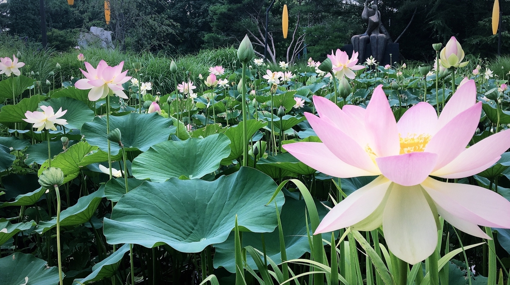

Perfumatory Collective is your guide to olfactory bliss. Fragance should tell a story, and the most iconic ones were created to capture a moment, a mood, a place in time. A history combined with your energy gives you the power to make a statement without saying a word.
Shop the Un Jardin Collection
Featured: Un Jardin Sur le Nil. Inspired by a walk through the garden islands along the Nile River, this opens with bright grapefruit and mango, followed by watery lotus, splashes of carrot and tomato, and dries down to moderate incense. Refreshing enough for a humid day, but complex enough to enjoy distinctive notes. A must-have for summer.
What should summer smell like? Anything by Jean Claude Ellena

For over 15 years he was the exclusive in-house perfumer at Hermes. Ellena drew a fervent set of followers with his minimalist style, and even inspired a New York Times journalist to write a book diving into how perfume gets made.
Summer Perfumes: essentials for when the heat index tops 100
Pack up the gourmands and heady florals, the best summer fragrances have notes of crisp citrus, verdant herbs, or tropical fruits. Whether you're having cocktails with friends, spending a day in the park, or just trying survive in an apartment without AC, we have the perfect scents to suit your mood.